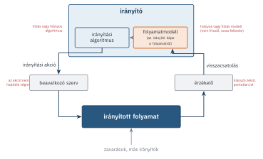
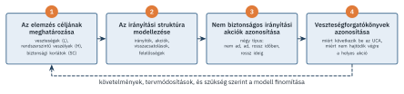
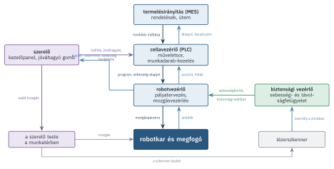

7. Rendszerelméleti veszélyelemzés: STAMP és STPA

Az FMEA és a hibafa alapfeltevése, hogy a balesetek alkatrészhibákból vagy azok kombinációiból fakadnak. A szoftverintenzív, automatizált, emberrel együttműködő rendszerekben azonban egyre gyakoribbak azok a balesetek, amelyekben egyetlen alkatrész sem hibásodik meg. A baleset a komponensek nem biztonságos kölcsönhatásából, hibás követelményekből vagy az ember és az automatizálás félreértéséből fakad. Az 1. fejezetben bemutatott Mars Polar Lander, a Boeing 737 MAX vagy az Uber-baleset is ilyen. Erre a kihívásra adott választ Nancy Leveson STAMP-modellje és az erre épülő veszélyelemzési módszer, az STPA. Ez a fejezet a módszert a KoboCella kollaboratív robotcelláján vezeti végig.
A fejezet végére képes leszel
- elmagyarázni, miért nem elegendőek az alkatrészhiba-alapú módszerek a szoftverintenzív és ember–automatizálás rendszerekben;
- leírni a STAMP fogalmait: biztonsági korlát, hierarchikus irányítási struktúra, folyamatmodell, visszacsatolás;
- végigvezetni az STPA négy lépését: veszteségek és veszélyek meghatározása, irányítási struktúra modellezése, nem biztonságos irányítási akciók azonosítása, veszteségforgatókönyvek feltárása;
- az STPA eredményeiből biztonsági követelményeket levezetni;
- összevetni az STPA-t a hagyományos módszerekkel, és tudni, mikor melyiket érdemes alkalmazni.
7.1. Miért kell új módszer?
A hagyományos veszélyelemzési módszerek (FMEA, hibafa, HAZOP) az 1950–1970-es évek elektromechanikus rendszereire születtek. Ezekben a baleset tipikusan valóban egy vagy több alkatrész meghibásodásából fakadt, és a komponensek közötti kölcsönhatások viszonylag egyszerűek, átláthatók voltak. A mai rendszerekben három dolog változott meg (Leveson 2011):
- A szoftver nem hibásodik meg, mégis okozhat balesetet. A szoftver pontosan azt teszi, amit a kód előír. Ha a követelmény hibás vagy hiányos (nem gondolt egy működési helyzetre), a szoftver „helyesen” fog veszélyes dolgot tenni. A szoftverhiba-arány fogalmának nincs értelme, és a „meghibásodás” helyett a „nem biztonságos viselkedés” a helyes kategória.
- A komponensek kölcsönhatása bonyolulttá vált. Egy modern jármű vagy gyártócella tucatnyi irányító egységből áll, amelyek hálózaton kommunikálnak. A veszély nem egy komponensben, hanem a kölcsönhatásban rejlik: két, külön-külön helyesen működő funkció együtt nem biztonságos.
- Az ember szerepe megváltozott. Az ember már nem közvetlen kezelő, hanem felügyelő, aki az automatizálás állapotát értelmezi, és szükség esetén beavatkozik. A tipikus hiba nem a „rossz gomb megnyomása”, hanem az, hogy az ember másnak hiszi a rendszer állapotát, mint amilyen (üzemmód-tévesztés), vagy nem érti, mit csinál az automatizálás.
Az alkatrészhiba-alapú módszerek ezeket a jelenségeket rosszul kezelik. Az FMEA-ban a szoftvernek nincs meghibásodási módja abban az értelemben, ahogy egy szelepnek; a hibafa alapeseményei között nem szerepel az, hogy „a követelmény nem vette figyelembe a lábak kinyitásakor keletkező rezgést”.
7.2. A STAMP modell
A STAMP (Systems-Theoretic Accident Model and Processes) a rendszerelméletre és az irányításelméletre épül (Leveson 2011). Három alapfogalma van.
Biztonsági korlátok. A biztonság a rendszer emergens tulajdonsága: nem az egyes komponensekben, hanem a komponensek viselkedését korlátozó szabályokban jelenik meg. A biztonsági korlát (safety constraint) olyan feltétel, amelynek teljesülnie kell ahhoz, hogy a rendszer ne kerüljön veszélyes állapotba („a robot sebessége 250 mm/s alatt legyen, ha ember van a közelében”).
Hierarchikus irányítási struktúra. A biztonsági korlátokat irányítók érvényesítik, amelyek hierarchiába rendeződnek: a jogalkotótól és a hatóságtól a vállalatvezetésen, a mérnöki szervezeten és a kezelőn át az automatikus irányítókig. Minden szint irányítja az alatta lévőt (követelményekkel, utasításokkal, irányító parancsokkal), és visszajelzést kap tőle (jelentésekkel, mérésekkel).
Folyamatmodell. Minden irányító, ember és gép egyaránt, a döntéseit a saját folyamatmodellje alapján hozza: az irányított folyamat állapotáról alkotott képe alapján (7.1. ábra). Egy emberi kezelő folyamatmodellje a mentális modellje, egy szoftveré a belső változói. A balesetek jelentős része abból fakad, hogy a folyamatmodell eltér a valóságtól: a Therac-25 szoftvere más beállítást „hitt”, mint ami valójában volt; a 737 MAX MCAS-funkciója a hibás érzékelőjel miatt túl nagynak „hitte” az állásszöget; az Uber szoftvere a gyalogost minden átsorolásnál új objektumnak „hitte”.

A STAMP szerint a baleset oka mindig az, hogy egy biztonsági korlát nem érvényesült. Ennek lehetséges okai az irányítási hurok elemeihez köthetők: az irányító nem ad ki szükséges parancsot, vagy nem biztonságos parancsot ad; a parancsot rosszkor vagy rossz ideig adja; a parancs nem hajtódik végre; a visszacsatolás hiányzik, késik vagy hibás, és ezért a folyamatmodell téves.
7.3. Az STPA lépései
Az STPA (System-Theoretic Process Analysis) a STAMP-ra épülő veszélyelemzési módszer. Részletes leírása az MIT kutatóinak STPA Handbook című, ingyenesen elérhető kézikönyvében található (Leveson és Thomas 2018). A módszer négy lépésből áll (7.2. ábra).

7.3.1. 1. lépés: az elemzés céljának meghatározása
Az első lépés meghatározza, mit akarunk megelőzni.
- Veszteségek (losses, L): az érintettek számára elfogadhatatlan kimenetelek, például emberi sérülés vagy halál, környezeti kár, a küldetés vagy a termelés elvesztése, a hírnév sérülése.
- Rendszerszintű veszélyek (system-level hazards, H): olyan rendszerállapotok vagy feltételek, amelyek a környezet legrosszabb esetű körülményeivel együtt veszteséghez vezetnek. Fontos, hogy a veszély a rendszer állapota legyen (amit a tervező befolyásolni tud), ne a környezeté, és ne egy alkatrész meghibásodása. A „robotkar meghibásodik” nem rendszerszintű veszély, a „a robotkar a szerelőhöz közel a biztonságos határnál nagyobb sebességgel mozog” az.
- Rendszerszintű biztonsági korlátok (system-level constraints, SC): a veszélyek fordítottjai, vagyis azok a feltételek, amelyeknek teljesülniük kell a veszélyek megelőzéséhez, illetve a veszteség csökkentéséhez, ha a veszély mégis bekövetkezik.
Minden veszélyhez hozzárendeljük, mely veszteség(ek)hez vezethet, így a nyomon követhetőség a teljes elemzésen át biztosított.
7.3.2. 2. lépés: az irányítási struktúra modellezése
A második lépés a rendszer irányítási struktúrájának felrajzolása: az irányítók (emberek, szervezetek, automatikus egységek), az általuk kiadott irányítási akciók és az általuk kapott visszacsatolások. A modell nem fizikai rajz és nem adatfolyam-diagram, hanem funkcionális: azt mutatja meg, ki mit irányít, és mit tud az irányított folyamatról. Minden irányítóhoz rögzítjük a felelősségeit (melyik biztonsági korlát érvényesítéséért felel) és a folyamatmodelljének fontos változóit.
7.3.3. 3. lépés: nem biztonságos irányítási akciók
A harmadik lépés minden irányítási akcióra megvizsgálja, milyen körülmények között lehet nem biztonságos (unsafe control action, UCA). Az STPA négy típust különböztet meg:
- az akció elmaradása veszélyhez vezet (not providing causes hazard);
- az akció kiadása veszélyhez vezet (providing causes hazard);
- az akció túl korán, túl későn vagy rossz sorrendben érkezik (too early, too late, out of order);
- az akció túl korán áll le vagy túl sokáig tart (folyamatos akcióknál; stopped too soon, applied too long).
Minden UCA-t a kontextusával együtt kell megfogalmazni: egy akció önmagában ritkán veszélyes, csak bizonyos helyzetben. A jó UCA-megfogalmazás öt eleme: az irányító, az akció típusa, maga az akció, a kontextus és a hivatkozás a veszélyre. Például: „A biztonsági vezérlő nem aktiválja a sebességkorlátozást, amikor személy tartózkodik a figyelt zónában [H1].”
7.3.4. 4. lépés: veszteségforgatókönyvek
A negyedik lépés azt vizsgálja, miért következhet be egy UCA, illetve miért nem hajtódhat végre egy helyes akció. Két forgatókönyv-típus van:
- (a) Miért adja ki az irányító a nem biztonságos akciót? Az irányítási algoritmus hibás vagy hiányos; a folyamatmodell téves (az irányító rosszul ismeri a folyamat állapotát), mert a visszacsatolás hiányzik, késik, pontatlan, vagy rosszul értelmezik; az irányító más irányítóktól ellentmondó parancsokat kap.
- (b) Miért nem hajtódik végre a helyes akció, vagy miért nem éri el a hatását? A beavatkozó szerv hibás vagy lassú; az irányított folyamat másképp viselkedik, mint feltételezték; zavarás vagy más irányító akciója hatástalanítja.
A forgatókönyvekből közvetlenül adódnak a követelmények és tervezési döntések: redundáns vagy diverz visszacsatolás, a folyamatmodell érvényességének ellenőrzése, üzemmódjelzés, reteszelés, a kezelői felület módosítása, szervezeti eljárások.
7.4. Kidolgozott STPA a KoboCella esetre
7.4.1. Veszteségek, veszélyek, korlátok
A KoboCella STPA-jának első lépése a 7.1. táblázatban látható.
| Azonosító | Megfogalmazás | Kapcsolat |
|---|---|---|
| L1 | a szerelő sérülése | – |
| L2 | a berendezés vagy a munkadarab károsodása | – |
| L3 | a termelés kiesése | – |
| H1 | a robotkar a szerelőhöz közel a biztonságos határnál nagyobb sebességgel mozog | L1 |
| H2 | a robot a szerelő testére a biomechanikai határértéknél nagyobb erőt vagy nyomást fejt ki | L1 |
| H3 | a robot a megfogott munkadarabot ellenőrizetlenül elengedi a szerelő fölött | L1, L2 |
| H4 | a cella indokolatlanul leáll, vagy nem indítható újra | L3 |
| SC1 | a robotkar sebessége nem haladhatja meg a szerelőtől mért távolsághoz tartozó biztonságos határt | H1 |
| SC2 | a robot által kifejtett erő és nyomás nem haladhatja meg az ISO/TS 15066 szerinti határértékeket | H2 |
| SC3 | a megfogó csak akkor nyithat, ha a munkadarab a lerakóhelyen van | H3 |
| SC4 | a biztonsági funkciók nem okozhatnak a termelést aránytalanul zavaró téves leállást | H4 |
Érdemes észrevenni a H4–SC4 párt. Az STPA nem csak a biztonságot vizsgálja, hanem a termelékenységgel való konfliktust is láthatóvá teszi. A túl gyakori téves leállás a 1.4.5. szakaszban leírt sodródás klasszikus kiváltója: a kezelők elkezdik áthidalni a „kényelmetlen” védelmet.
7.4.2. Az irányítási struktúra
A KoboCella irányítási struktúráját a 7.3. ábra mutatja. A termelésirányító rendszer (MES) adja ki a rendeléseket a cellavezérlőnek; a cellavezérlő (PLC) futtatja a műveletsort, és sebesség-alapjelet ad a robotvezérlőnek; a robotvezérlő tervezi a pályát és vezérli a robotkart. A biztonsági vezérlő a lézerszkenner jelei alapján felügyeli a szerelő és a robot távolságát, és sebességkorlátozást vagy biztonsági leállítást kényszerít a robotvezérlőre. A szerelő a kezelőpanelen indítja, jóváhagyja és nyugtázza a műveleteket, és saját testével is része az irányított folyamatnak.

A modell egy fontos részletét már a felrajzolás során észrevette a csapat: a szerelő az üzemmódot (kollaboratív vagy nem kollaboratív) és a pillanatnyi sebességkorlátot csak a kezelőpanel egy kis kijelzőjén látja, amelyre munka közben nem néz rá. A folyamatmodellje ezért elavulhat.
7.4.3. Nem biztonságos irányítási akciók
A 7.2. táblázat két irányítási akcióra mutatja az UCA-elemzést: a biztonsági vezérlő „sebességkorlátozás aktiválása” és a szerelő „a következő lépés jóváhagyása” akciójára.
| Akció | Nem adja ki | Kiadja | Rossz időben vagy sorrendben | Rossz ideig |
|---|---|---|---|---|
| biztonsági vezérlő: sebességkorlátozás | UCA-1: nem korlátoz, amikor személy van a figyelt zónában [H1] | UCA-2: korlátoz, amikor nincs személy a zónában (téves leállás) [H4] | UCA-3: a korlátozás azután lép életbe, hogy a szerelő már a robot pályáján van [H1] | UCA-4: a korlátozást feloldja, mielőtt a személy elhagyta a zónát [H1] |
| szerelő: jóváhagyás | (nem veszélyes; a cella vár) | UCA-5: jóváhagyja a következő lépést, amikor a keze még a megfogó közelében van [H2] | UCA-6: a lerakás előtt hagyja jóvá a megfogó nyitását [H3] | – |
7.4.4. Veszteségforgatókönyvek és követelmények
Az UCA-1-hez (a sebességkorlátozás elmarad, pedig személy van a zónában) a csapat a következő forgatókönyveket tárta fel:
- F-1 (téves folyamatmodell, takarás): a szerelő a nagy munkadarab mögött áll, a lézerszkenner nem látja, a biztonsági vezérlő ezért úgy „tudja”, hogy a zóna üres. → Követelmény: a szkenner elhelyezését úgy kell megtervezni, hogy a munkadarab semmilyen pozícióban ne takarja a szerelő lehetséges helyzeteit; ennek igazolására takarási elemzés (szimuláció) szükséges.
- F-2 (téves folyamatmodell, konfiguráció): a karbantartás során a szkenner zónakonfigurációját módosították (a figyelt zónát kisebbre állították a téves leállások miatt), és ezt senki nem ellenőrizte. → Követelmény: a biztonsági konfiguráció módosítása csak jelszóval, naplózva és ellenőrzés után lehetséges; a konfiguráció ellenőrzőösszegét a biztonsági vezérlő minden indításkor ellenőrzi.
- F-3 (a beavatkozás nem hat): a biztonsági vezérlő kiadja a korlátozást, de a robotvezérlő egy szoftverfrissítés után a korlátozást csak a következő mozgásszakasztól alkalmazza. → Követelmény: a sebességkorlátozás végrehajtását a biztonsági vezérlőnek független sebességméréssel kell ellenőriznie, és eltérés esetén biztonságos leállítást kell kezdeményeznie; minden robotvezérlő-frissítés után a biztonsági funkciót validálni kell.
- F-4 (visszacsatolás késése): a szkenner válaszideje és a robot fékútja együtt nagyobb, mint amennyit a zónaméret megenged. → Követelmény: a védőtávolságot a robot legrosszabb esetű fékútjával és a teljes válaszidővel kell méretezni (lásd a gyakorlati útmutató feladatát).
Az UCA-5-höz (a szerelő a keze veszélyes helyzetében hagyja jóvá a következő lépést) a forgatókönyv egészen más jellegű: a szerelő folyamatmodellje téves (azt hiszi, hogy a robot kollaboratív üzemmódban, erőkorlátozással mozog, holott egy speciális műveletnél nem kollaboratív üzemmódban van). → Követelmény: az üzemmódot a munkaterületen jól látható módon kell jelezni (például színes fénysávval a roboton); a nem kollaboratív üzemmódban a jóváhagyás csak kétkezes vezérlővel lehetséges.
Ezek a forgatókönyvek jól mutatják az STPA erejét. Az F-2 (karbantartási konfigurációmódosítás), az F-3 (szoftverfrissítés utáni viselkedésváltozás) és az UCA-5 (üzemmód-tévesztés) egyike sem alkatrész-meghibásodás, ezért egy hagyományos FMEA-ban vagy hibafában nehezen jelenne meg. Mindhárom a valós ipari balesetek tipikus mintázata.
A VészFék fékezési parancsának UCA-elemzése:
- nem adja ki: nem kezdeményez fékezést, amikor akadály van a pályán, és az ütközés elkerülhetetlen [H: frontális ütközés];
- kiadja: fékezést kezdeményez, amikor nincs valós akadály [H: ráfutásos baleset];
- túl későn: a fékezés akkor kezdődik, amikor az ütközés már nem csökkenthető számottevően;
- túl korán áll le: a fékezés megszakad, amikor a szoftver az akadályt átsorolja (például gyalogosból „ismeretlen objektummá”).
Az utolsó UCA egyik forgatókönyve közvetlenül megfelel az Uber-baleset jelentésében leírt mechanizmusnak: az osztályozás ingadozása miatt a rendszer mozgáselőzménye minden átsorolásnál elveszett (1.2. szakasz). A levezetett követelmény: az objektum követését és a fékezési döntést az osztályozástól függetlenül, a pálya és a mozgás alapján is meg kell hozni.
7.5. Az STPA helye a módszerek között
Az STPA nem váltja ki a hagyományos módszereket, hanem kiegészíti őket. A 7.3. táblázat a fő különbségeket foglalja össze.
| Szempont | FMEA, hibafa | HAZOP | STPA |
|---|---|---|---|
| baleseti modell | alkatrészhiba, hibalánc | eltérés a tervezési szándéktól | nem érvényesülő biztonsági korlát |
| kiindulópont | alkatrészek vagy csúcsesemény | P&ID csomópontok | veszteségek, irányítási struktúra |
| szoftver, követelményhibák | gyengén | közepesen (CHAZOP) | erősen |
| ember és automatizálás | gyengén | közepesen | erősen (folyamatmodell) |
| kvantitatív eredmény | igen (valószínűség, gyakoriság) | nem (félkvantitatív kiegészítéssel) | nem |
| alkalmazhatóság | részletes tervezés | részletes tervezés | a koncepciótól kezdve |
Az STPA különösen akkor ajánlott, ha a rendszer szoftverintenzív, sok irányítóból áll, ember és automatizálás együttműködésén alapul, vagy új, kevéssé ismert technológiát alkalmaz. Mivel a koncepciós fázisban is elvégezhető (a részletes terv ismerete nélkül), korán befolyásolhatja az architektúrát. A kvantitatív igazoláshoz (PFD, PMHF) viszont továbbra is a III. rész módszerei kellenek: az STPA megmondja, mit kell biztosítani, a hibafa és a Markov-modell pedig azt, hogy mennyire megbízhatóan sikerült.
A módszernek több változata és kiterjesztése is van. A CAST (Causal Analysis based on STAMP) a STAMP-ra épülő balesetvizsgálati módszer; az STPA-Sec a kiberbiztonsági veszélyek elemzésére alkalmazza ugyanezt a szemléletet. Az autóiparban a SAE J3187 ajánlott gyakorlat (2022) írja le az STPA alkalmazását, és a rendeltetésszerű funkció biztonságát szabályozó ISO 21448 is a lehetséges módszerek között említi.
Az STPA-t néha táblázatkitöltési gyakorlatként alkalmazzák: minden akcióhoz mechanikusan beírnak négy UCA-t, és a forgatókönyveket elhagyják. Így a módszer legértékesebb része, a negyedik lépés vész el, ahol a valódi okok és a tervezési követelmények születnek. Az UCA-k csak a „mit”, a forgatókönyvek a „miért” kérdésére felelnek, és csak a „miért”-ből lesz tervmódosítás.
7.5.1. Erősségek és korlátok
Erősségek: a specifikációs és követelményhibákat, a komponensek közötti kölcsönhatásokat, a szoftver és az ember szerepét egységes keretben kezeli; a koncepciós fázisban is alkalmazható; közvetlenül tervezési követelményeket ad; a szervezeti és szabályozási szinteket is elemzi.
Korlátok: a módszer viszonylag új, a szabványosítása és az iparági gyakorlata még formálódik; nagy rendszereknél az irányítási struktúra és a forgatókönyvek száma gyorsan nő; az eredmény minősége, akárcsak a HAZOP-nál, a csapat tudásán múlik; nem ad számszerű kockázati mérőszámot.
A gyakorlati útmutató 5. laborjában egy böngészős STPA-munkalappal dolgozol: felrajzolod egy egyszerű rendszer irányítási struktúráját, kitöltöd az UCA-táblázatot, és minden UCA-hoz legalább két forgatókönyvet és egy követelményt rendelsz. A feladat a VészFék és a KoboCella közül választható.
- A szoftverintenzív és ember–automatizálás rendszerekben a balesetek gyakran meghibásodás nélkül, nem biztonságos kölcsönhatásokból és hibás követelményekből fakadnak.
- A STAMP szerint a biztonság emergens tulajdonság, amelyet a hierarchikus irányítási struktúra a biztonsági korlátok érvényesítésével tart fenn; a balesetek oka a nem érvényesülő korlát.
- Az irányítók a folyamatmodelljük alapján döntenek; a téves folyamatmodell a balesetek gyakori oka.
- Az STPA négy lépése: veszteségek, veszélyek és korlátok; irányítási struktúra; nem biztonságos irányítási akciók (négy típus, kontextussal); veszteségforgatókönyvek és követelmények.
- Az STPA kiegészíti a hagyományos módszereket; korán alkalmazható, de nem ad kvantitatív eredményt.
- Miért nem rendszerszintű veszély az, hogy „a lézerszkenner meghibásodik”? Fogalmazd meg helyesen a mögötte álló veszélyt!
- Sorold fel az UCA négy típusát, és adj mindegyikre példát egy lift ajtajának „ajtó nyitása” akciójára!
- Mi a folyamatmodell, és miért fontos a STAMP-ban? Mutasd be egy példán, hogyan vezethet baleshez a téves folyamatmodell!
- Melyik STPA-lépés adja a tervezési követelményeket, és miért?
Megoldás
- Mert alkatrészhiba, nem a rendszer állapota; ráadásul a szkenner meghibásodása nem feltétlenül vezet veszélyhez (lehet biztonságos meghibásodás is). A helyes veszély: „a robotkar a szerelőhöz közel a biztonságos határnál nagyobb sebességgel mozog”. A szkenner meghibásodása ennek egy lehetséges oka a negyedik lépés forgatókönyveiben.
- Nem adja ki: nem nyitja az ajtót, amikor a fülke a szinten áll, és tűz miatt menekülni kell. Kiadja: kinyitja az ajtót, amikor a fülke nincs a szinten. Rossz időben: túl korán nyit, amikor a fülke még mozog. Rossz ideig: túl korán zárja, amikor valaki még az ajtóban áll.
- A folyamatmodell az irányító képe az irányított folyamat állapotáról (embernél a mentális modell, szoftvernél a belső változók). Az irányító ez alapján dönt, ezért ha a modell eltér a valóságtól, helyes algoritmus mellett is nem biztonságos döntést hoz. Példa: a 737 MAX MCAS-funkciója egyetlen hibás állásszög-érzékelő jele alapján túl nagynak „hitte” az állásszöget, és ismételten lefelé trimmelte a gépet.
- A negyedik lépés (veszteségforgatókönyvek), mert ez tárja fel, miért következhet be egy nem biztonságos akció, illetve miért nem hajtódik végre a helyes akció. A konkrét okokra (takarás, konfigurációmódosítás, késleltetés, üzemmód-tévesztés) adható tervezési válasz.
- Leveson, N. G. (2011): Engineering a Safer World. MIT Press – a STAMP és az STPA elméleti alapjai, nyílt hozzáféréssel (Leveson 2011).
- Leveson, N. G., Thomas, J. P. (2018): STPA Handbook – lépésenkénti útmutató sok példával, ingyenesen letölthető (Leveson és Thomas 2018).
- ISO/TS 15066:2016 – a kollaboratív robotok biomechanikai határértékei (ISO 2016).